Snímky obrazovky pro GNOME a Cinnamon
Nasnímej, popiš a zkopíruj
Shot zastaví obraz na všech monitorech najednou. Vybereš oblast, okno nebo monitor, nakreslíš do zastaveného obrazu a výsledek zkopíruješ, uložíš, připneš, nahraješ nebo z něj přečteš text. Všechno, co snímek do dokumentace potřebuje, je v jednom překryvu.
- Bez účtu
- Žádný cizí kód
- Nahrává jen když stiskneš Nahrát
Běží na GNOME 45 až 50 (Wayland i X11) a na Linux Mintu s Cinnamonem 6 (X11). Screenshoty na téhle stránce jsou pořízené Shotem samotným.
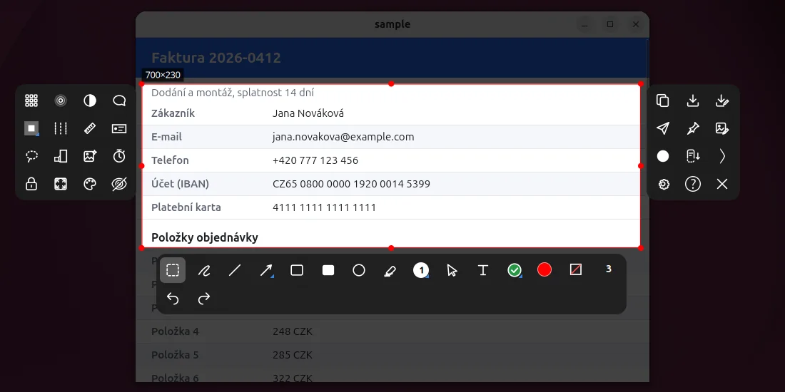
Zblízka
Čtyři věci, které stojí za bližší pohled
Většina Shotu je to, co čekáš od nástroje na snímky obrazovky. Tyhle čtyři části jsou udělané pro snímky do dokumentace, pro dlouhý obsah a pro postupy, a jsou tu popsané podrobně.
Skrolovací snímek a Stop pro obsah, který nekončí
Vyber oblast přes dlouhou stránku, chat, seznam nebo tabulku a stiskni Skrolovat. Shot obsah pod oblastí posouvá sám, po každém kroku nasnímá obrázek a spojí je do jednoho vysokého. Funguje v aplikacích, které se posouvají kolečkem myši.
- Stop kdykoli. Těsně pod oblastí je po celou dobu červené tlačítko Stop. Stiskneš ho a Shot běh ukončí a dá ti, co je zatím spojené. Je to cesta, jak ukončit tabulku nebo seznam bez konce, kde by čekání skončilo až na nejvyšší výšce.
- Odsud nebo od začátku. Shot se zeptá a u druhé odpovědi obsah nejdřív vrátí na začátek. Nastavení Kde skrolovací snímek začíná si odpověď zapamatuje.
- Čeká, až obraz stojí. Po každém kroku Shot porovná dva obrázky těsně po sobě a vezme ten, který se už nehýbe, takže se stránka, která se plynule posouvá nebo během toho dočítá obsah, nečte uprostřed pohybu.
- Spojuje podle toho, co je na obrázcích. Krok je asi polovina oblasti, takže se obrázky překrývají, a posun najde porovnáním řádků. Pevná hlavička nebo patička se vezme jednou, posuvník ani zvýraznění položky pod ukazatelem ho nesplete a když se dva obrázky nespojí, vrátí se a vezme menší krok.
- Skončí sám, když se obsah třikrát po sobě nepohne, nebo na nejvyšším obrázku z nastavení (zprvu 30000 pixelů).
- Nepřepínej do jiného okna, dokud neskončí. Kolečko jde do okna pod ukazatelem a další kroky by posouvaly něco jiného.
- Kde kolečko nic nedělá, to Shot po dvou krocích pozná, požádá tě, abys posouval sám, a obrázky bere průběžně. Ukončí to klávesa Shotu.
- Do strany a výsledek je normální obrázek. Tlačítko Vedle dělá totéž pro širokou tabulku nebo časovou osu. Výsledek se otevře jako vysoký nebo široký obrázek, který jde posouvat, kreslit do něj a kopírovat jako každý jiný.
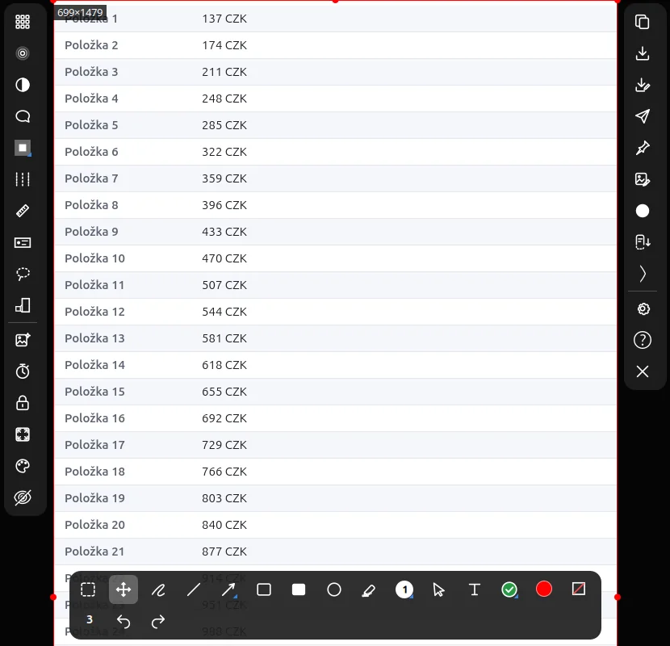
Osobní údaje najde a zakryje Shot
Ctrl+Shift+R přečte obrázek a na každý e-mail, telefon, číslo účtu, IBAN a číslo karty, který najde, položí pixelaci. Výsledek zkontroluješ a obrázek pošleš dál.
- Jak je hledá. Shot pustí rozpoznávání textu programu tesseract čtyřikrát vedle sebe, na obrázku v původní velikosti, dvakrát zvětšeném, třikrát zvětšeném a třikrát zvětšeném a mírně rozmazaném, a sloučí, co čtyři průchody našly. Jazyky se nastavují v nastavení, třeba eng+ces.
- Obyčejné kresby. Každý nález je pixelace nakreslená jako kterákoli jiná, takže ji jde posunout, odebrat nebo přidat další na to, co Shot přehlédl. Ctrl+Z je vrátí všechny najednou.
- Co najde. Na sadě 120 vymyšlených obrazovek našel 91 % takových údajů a nepoložil rámeček na špatné místo. Jména ani adresy nehledá, takže se na obrázek před odesláním podívej.
- Pixelace, rozmazání, inverze. Klávesy B, U a I zakryjí oblast, přes kterou táhneš. Jsou to kresby jako ostatní, takže jdou posunout, změnit i vrátit.
- Laso. Klávesa J ořízne obrázek na volný tvar. Mimo něj je průhledno (JPG dostane bílé pozadí) a víc las se sečte.
- I v záznamu kroků. Volba Zakrývat osobní údaje pustí stejné hledání na každý krok, nalezené pixeluje a z titulku vypustí. Krok, který se zkontrolovat nepodařilo, se neuloží.
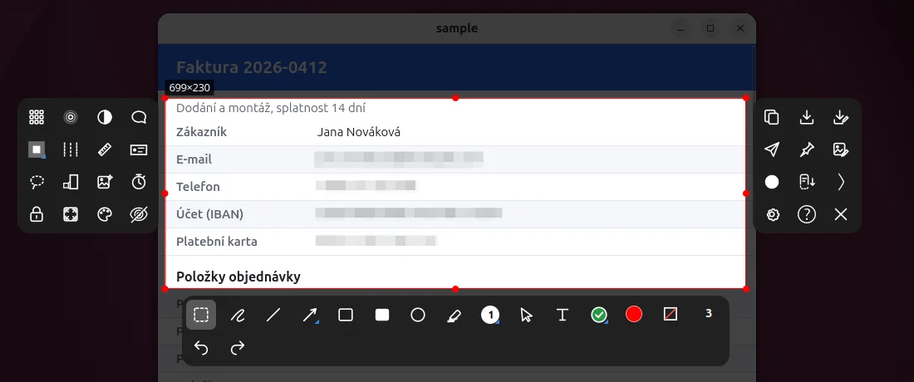
Dokument z kroků vytvořený tvými kliky
Ctrl+Shift+Print spustí záznam kroků a ty postup uděláš jako obvykle. Každý klik myší je jeden číslovaný obrázek a když záznam zastavíš, jsou z těch obrázků dokument.
- Jeden klik, jeden krok. V okamžiku stisku Shot nasnímá monitor pod ukazatelem, nebo okno pod ním, a na místo kliknutí nakreslí červený kruh s číslem kroku. Klik na ikonu nebo menu Shotu a klik v otevřeném překryvu krok není.
- Kroky bez kliknutí. Shift+Alt+Print přidá krok ručně, pro něco, co se dělá klávesnicí.
- Výsledek. Stejná zkratka záznam ukončí. Ve složce
kroky-<datum>v ukládací složce je01.png,02.pnga další,kroky.mda jedenkroky.htmls obrázky uvnitř, takže se dá poslat jako jeden soubor. - Titulky, které jde přepsat. Každý krok má titulek jako „Klik v Firefoxu - Nastavení“, převzatý z aplikace a titulku okna, a jde změnit.
- Ze skriptu.
shot-cli steps start,stopaadddělají totéž a nahrávání oblasti a záznam kroků se navzájem vylučují.
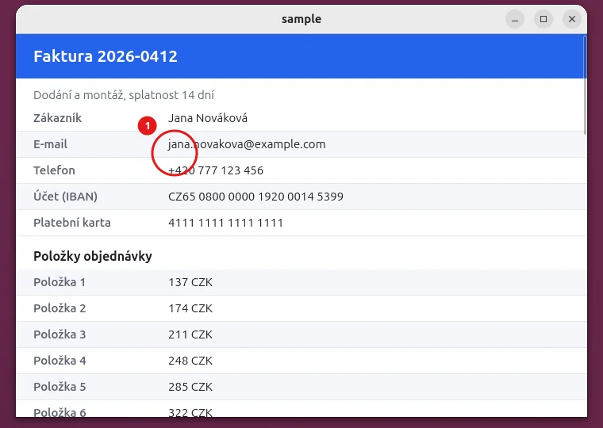
Snímek, ke kterému se dá vrátit
Snímek není jen obrázek. Shot drží kresby odděleně od obrázku, takže ho můžeš později otevřít a změnit, co jsi nakreslil.
- Karta po každém snímku. Po zkopírování nebo uložení zůstane v pravém dolním rohu 6 sekund karta s miniaturou. Upravit otevře snímek znovu v Shotu s jeho kresbami.
- Projekt, ne jen PNG. Každý snímek se uchová i jako projekt
.shot, obrázek bez kreseb a kresby vztažené k oblasti. Po otevření jde šipky, rámečky a texty znovu vybrat a změnit, ne přemalovat. - Historie. Nejnovější snímky jsou vypsané v menu v panelu a kolik se jich uchová, je nastavení.
- Víc oblastí v jednom snímku. Ctrl+tažení přidá další oblast a výsledek nechá každou na jejím místě a mezi nimi je průhledno. Laso vystřihne volný tvar.
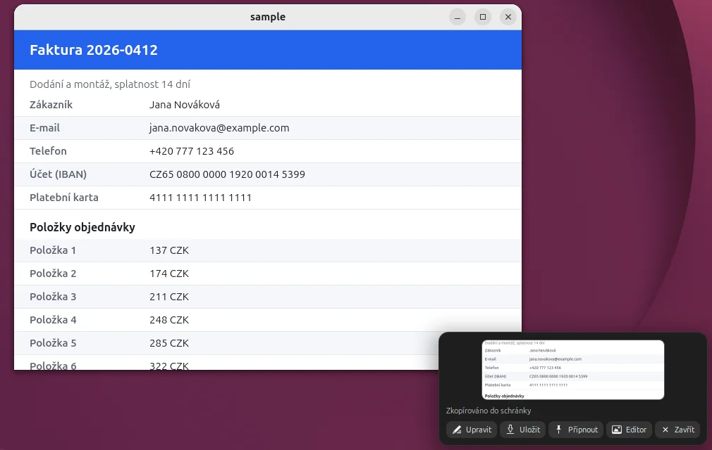
V říjnu 2026 autor prošel funkce 14 nástrojů na snímky obrazovky, mezi nimi ShareX, Snagit, CleanShot X, Shottr, Flameshot, Ksnip a Spectacle. Několik částí výše, třeba skrolovací snímek, pevné velikosti oblasti a otevření snímku znovu s jeho kresbami, je známých z komerčních nástrojů. Shot je má bez ceny a pro Linux.
Co Shot umí
Osm věcí, každá má dole svou kapitolu.
Vybrat, co se nasnímá
Oblast přes víc monitorů, okno, celý monitor nebo víc oblastí najednou.
Kreslit do snímku
Šipky, rámečky, čísla, text, razítka, zvětšený detail a další, každý krok jde vrátit.
Zakrýt, co nemá být vidět
Pixelace, rozmazání, nebo nech Shot najít e-maily, čísla účtů a karet.
Dotáhnout obrázek
Stín, rámeček, zaoblené rohy, vytržený okraj, otočení a pozadí.
Poslat dál
Zkopírovat, uložit, připnout na obrazovku, otevřít v editoru, přečíst text nebo nahrát.
Nasnímat, co se nevejde
Shot obsah sám posouvá a snímky spojí, dolů i do strany.
Nahrávat
Oblast jako krátké WebP nebo GIF, nebo každý klik jako číslovaný krok v dokumentu.
Nastavit po svém
Složka, jméno souboru, kvalita, cíle, zkratky a vzhled panelů.
01
Vybrat, co se nasnímá
Shot zastaví obraz na všech monitorech najednou. Táhni přes zastavený obraz, oblast může přecházet přes monitory, a lupa ukazuje pixel pod ukazatelem i jeho souřadnice.
- Oblast, okno nebo monitor. Tažením vybereš oblast, kliknutím mimo ni okno pod ukazatelem, Shift+kliknutím celý monitor. Okno vybrané klikem se zachytí samo, s průhlednými zaoblenými rohy.
- Víc oblastí. Ctrl+tažení přidá do téhož snímku další oblast. Výsledek nechá každou oblast na jejím místě a mezi nimi je průhledno.
- Přesná velikost. Ctrl+R přijme velikost třeba 1280x720, uloženou předvolbu nebo zámek poměru stran. Šipky posouvají oblast o jeden pixel.
- Okraje se přichytávají k okrajům oken a monitorů, Alt přichytávání vypne. Ctrl+kolečko přiblíží zastavený obraz až 8x pro přesnou práci.
- Alt+tažení uvnitř oblasti zvedne, co v ní je, a položí to tam, kde pustíš, třeba doprostřed monitoru, kde je kolem místo na lišty a kreslení.
- Odklad a opakování. Ctrl+D nasnímá po odpočtu, takže se dá napřed otevřít menu. Ctrl+L zapamatuje oblast pro opakované snímky jednoho místa.
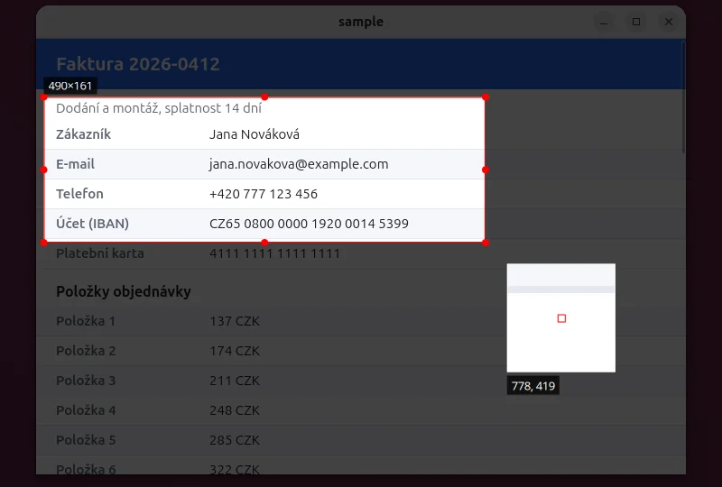
02
Kreslit do zastaveného obrazu
Nástroje jsou v liště pod oblastí a každý má klávesu, většinou stejnou jako ve Flameshotu. Každá kresba je krok pro Zpět a dá se později vybrat a upravit.
Kliknutí na kresbu ji vybere, Shift+klik přidá další. Vybraná čára nebo šipka ukáže tečky na svých bodech a tažení plusu uprostřed úseku přidá bod. Přichytávání k ostatním kresbám a k oblasti vypne Alt.
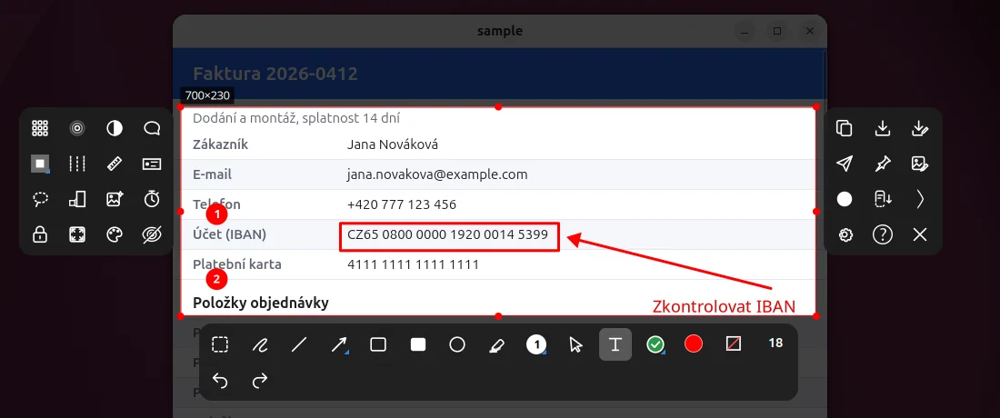
03
Dotáhnout obrázek
Ctrl+F otevře efekty celého obrázku s okamžitým náhledem. Patří do obrázku, který odchází, a můžou zůstat zapnuté i pro další snímky.
- Stín a rámeček. Měkký stín pod obrázkem a rámeček v barvě a šířce, jakou zvolíš.
- Vytržený papír. Obrázek vypadá jako vytržený z listu, s náhodně roztrhanými okraji a stínem podél trhliny.
- Tvar. Zaoblené rohy, ořez okraje, otočení (Ctrl+čárka a Ctrl+tečka otočí o čtvrtinu) a měřítko výstupu.
- Pozadí. Okraj kolem obrázku v barvě nebo přechodu a verze v odstínech šedi.
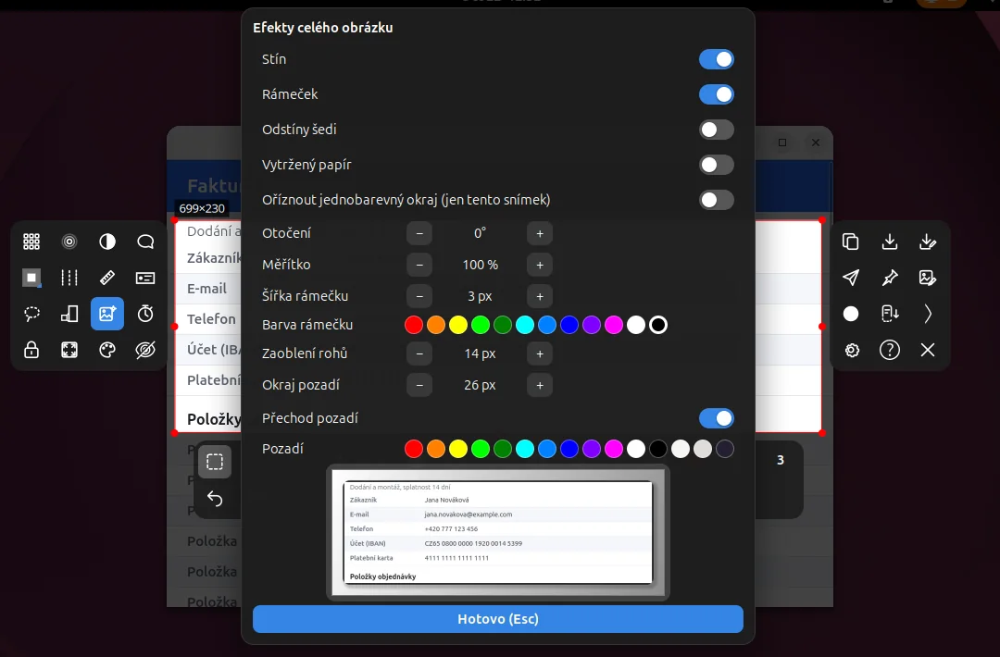
04
Poslat dál
Enter zkopíruje a cokoli dalšího je na dosah klávesy nebo kliknutí. Tab otevře seznam cílů.
- Kopírovat a uložit. Enter, Ctrl+C nebo dvojklik zkopíruje, Ctrl+S uloží a Ctrl+Shift+S uloží jako. Do schránky jde vždy PNG. Vzor jména souboru a složka jsou v nastavení.
- Poslat do. Tab nabídne kopírování, uložení, uložení jako, připnutí, editor obrázků, přečtení textu (tesseract) a Imgur s vlastním Client-ID.
- Připnuté obrázky. Ctrl+P připne obrázek nad obrazovku. Tažení ho posune, kolečko zvětší, Ctrl+kolečko mění průhlednost a pravé tlačítko otevře menu, ve kterém jde zapnout i proklikávání.
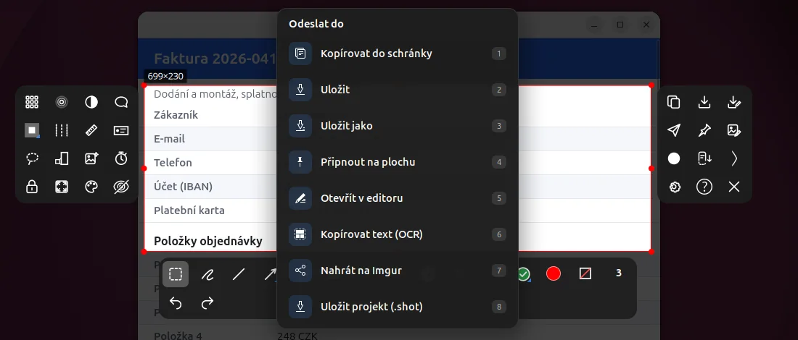
05
Nahrávat
Dva způsoby, jak ukázat postup: krátké nahrání oblasti, nebo dokument sestavený z tvých kliků.
- Nahrání oblasti. Ctrl+Shift+V nebo tlačítko Nahrát zavře překryv a nahrává živou obrazovku v oblasti. Těsně vně oblasti je tenký červený rámeček, takže v nahrávce není, a každé kliknutí ukáže červenou vlnku.
- WebP nebo GIF. Nahrávku převede ffmpeg, výchozí je WebP, který je mnohem menší než GIF, 15 snímků za sekundu. Zastaví se položkou v menu v panelu, klávesou Shotu nebo po časovém limitu (zprvu 60 sekund).
06
Víc monitorů
Překryv bere všechny tvoje monitory jako jednu obrazovku.
- Jeden zastavený obraz. Všechny monitory se zastaví společně, oblast může přejít přes hranici a Ctrl+A vezme celou plochu. Nastavení umí začít každý snímek výběrem monitoru.
- Lišty zůstávají vedle oblasti. Nástroje kreslení pod ní, zvláštní nástroje vlevo, výstup vpravo, celé, i přes hranici dvou monitorů. Lišta oblast nezakrývá, dokud je někde místo.
- Když na straně není místo, jde levá lišta napravo od oblasti, pravá nalevo a nástroje kreslení nad ni, a teprve potom podél okraje monitoru dovnitř oblasti. Žádná lišta nezmizí.
- Místo kolem malé oblasti. Alt+tažení uvnitř oblasti ji zvedne a položí tam, kde je volno.
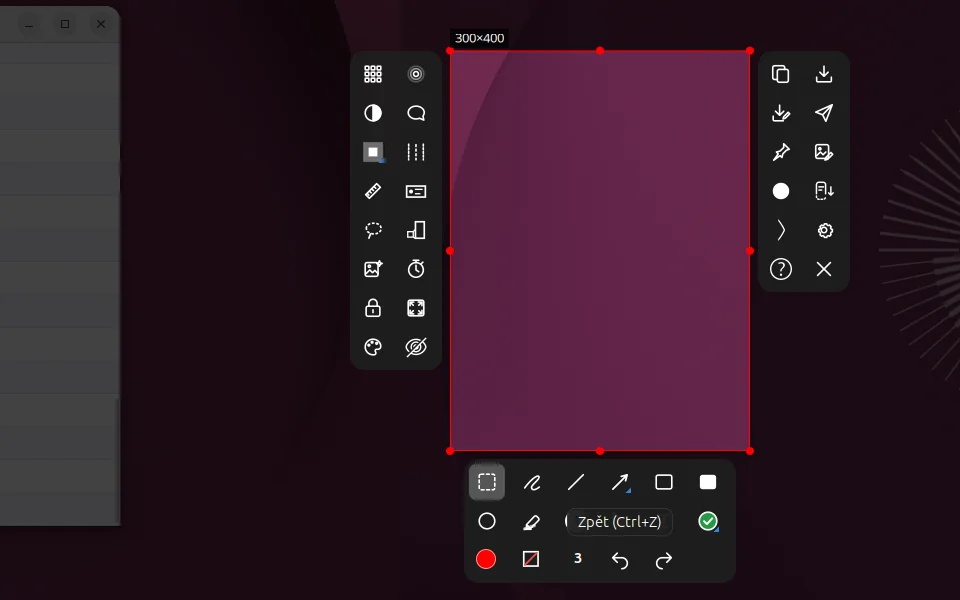
07
Nastavení
Okno nastavení se otevře z menu v panelu nebo z překryvu. Většina je na jedné stránce Obecné, pak jsou Klávesy a O aplikaci.
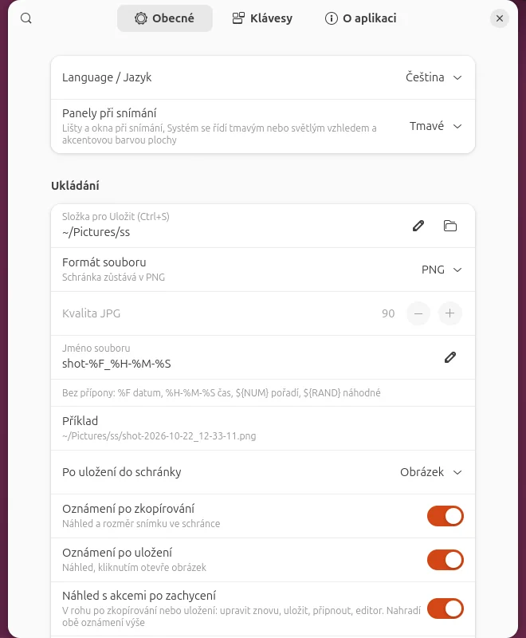
Ukládání
- Složka a jméno souboruSložka pro Uložit a vzor s datem, časem, počítadlem a náhodnou částí.
- Kvalita JPGSchránka zůstává PNG bez ohledu na formát souboru.
- Po uložení nebo zkopírováníNic, miniatura, nebo karta s akcemi a jak dlouho zůstane.
Obrazovka
- Ztmavení mimo oblastJak tmavý je zastavený obraz kolem oblasti.
- Pamatovat poslední oblast, napřed vybrat monitorDva způsoby, jak začít další snímek rychleji.
- Lupa, rozměr, krátké názvy pod ikonamiCo překryv ukazuje při výběru.
- Historie a ukazatelKolik snímků se uchová a jestli je ve snímku skutečný ukazatel.
Kreslení
- Barva a tloušťkaDrží se podle posledního použití, nebo zůstanou, jak jsou.
- Hroty šipky, začátek počítadla, krytí výplněPočáteční hodnoty nástrojů.
- Přichytávání kresebK sobě navzájem a k oblasti, Alt ho při tažení vypne.
- Text a kontextové razítkoZarovnání, pozadí pod novými texty a formát razítka.
Nahrávání a kroky
- Formát a rychlostWebP nebo GIF, snímky za sekundu a časový limit.
- Ukazatel a vlnkyJestli je v nahrávce ukazatel myši a vlnka u každého kliknutí.
- Záznam krokůKrok nasnímá monitor nebo okno pod ukazatelem a volba zakrývat osobní údaje.
Skrolovací snímek a efekty
- Kde skrolovací snímek začínáZeptat se, vždy odsud nebo vždy od začátku, a nejvyšší obrázek.
- Efekty celého obrázkuStín, rámeček, šedá, vytržený papír, měřítko, zaoblení a pozadí, držené pro další snímky.
Cíle
- Co dělá EnterZeptat se přes seznam cílů, nebo rovnou kopírovat či uložit.
- Jazyky rozpoznávání textuKódy tesseractu spojené plusem, třeba eng+ces.
- Imgur a editorVlastní Client-ID pro Imgur a program pro Otevřít v editoru.
Klávesy
- ZkratkyPrint spustí snímek a Alt+Print vezme aktivní okno. Obě se mění tady a každá klávesa překryvu má své místo na stránce Klávesy.
- ZálohaVšechna nastavení a zkratky se uloží do souboru JSON a z něj se vrátí. Imgur Client-ID se do něj nedává.
O aplikaci
- Verze a novinkyVerze, změny v ní a kontrola novější verze.
- AktualizaceJednou denně se Shot zeptá GitHubu na nejnovější vydání a nic dalšího se neodesílá. Kontrolu jde vypnout a aktualizace se stáhne, ověří podle podpisu a nainstaluje z téže stránky.
- PrůvodcePrůvodce, který tě vyzve, ať hlavní funkce vyzkoušíš na vlastní obrazovce.
08
Klávesy na jedné stránce
F1 otevře uvnitř Shotu stejnou nápovědu s hledáním, které funguje i bez diakritiky.
| Klávesa | Co dělá |
|---|---|
| Spustí snímek. Alt+Print vezme aktivní okno. | |
| tažení | Vybere oblast. Klik mimo ni vezme okno, Shift+klik monitor. |
| Ctrl+tažení | Přidá do téhož snímku další oblast. |
| Alt+tažení | Zvedne obsah oblasti a položí ho tam, kde pustíš. |
| Ctrl+R | Velikost oblasti a poměr stran. |
| Ctrl+A | Celá plocha. Ctrl+Backspace oblast zruší. |
| P D A S R C M | Tužka, čára, šipka, obdélník, plný obdélník, kruh, zvýrazňovač. |
| N K T O E W | Číslo, kurzor, text, bublina, razítko, kontextové razítko. |
| B U I H | Pixelace, rozmazání, inverze, zvýraznění. |
| X L J Z G F | Vystřižení pruhu, měření, laso, zvětšený detail, barva z obrazovky, výplň a stín. |
| Ctrl+M | Výběr a posun kreseb. |
| Ctrl+Z | Zpět. Ctrl+Shift+Z vrátí dopředu a Backspace smaže poslední kresbu. |
| Ctrl+Shift+R | Najde osobní údaje a pixeluje je. |
| Ctrl+F | Efekty celého obrázku. |
| Enter | Zkopíruje, nebo udělá to, co říká nastavení. Ctrl+C kopíruje, Ctrl+S ukládá. |
| Tab | Seznam cílů. |
| Ctrl+P | Připne obrázek na obrazovku. Ctrl+E ho otevře v editoru. |
| Ctrl+D | Odložený snímek. Ctrl+L zapamatuje oblast. |
| Ctrl+Shift+V | Nahraje oblast. |
| Ctrl+Shift+Print | Spustí a zastaví záznam kroků. Shift+Alt+Print přidá krok. |
| F1 | Nápověda ke každé funkci. |
| Esc | První stisk ukáže, že další zavře, druhý zavře. |
09
Instalace
Shot je rozšíření GNOME Shellu a Cinnamonu, na jiných desktopech neběží.
- Podporováno. GNOME Shell 45 až 50 na Waylandu i na X11 a Cinnamon 6 na X11, třeba Linux Mint 21.3 a 22.3. GNOME 42 až 44 a starší Cinnamon instalátor odmítne.
- Stáhni
shot-<verze>-linux.sha jeho podpis.sigz nejnovějšího vydání na stránce Releases repozitářemdiskuze/shotna GitHubu. - Spusť ho příkazem
sh shot-<verze>-linux.sh. Na Ubuntu, Debianu a Mintu doinstaluje přes apt chybějící volitelné programy, třeba ffmpeg, tesseract a zenity, a načte Shot do běžícího Shellu. - Stiskni Print. Průvodce v menu v panelu tě provede hlavními funkcemi na tvé obrazovce.
Další verze se instalují ze stránky O aplikaci v nastavení. Stažený soubor se před spuštěním ověří podle podpisu.